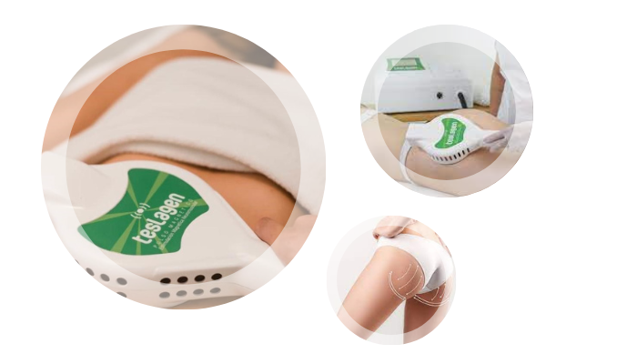

Body Up Burse Pulse
Body Up Pro es una tecnología que combina pulsos magnéticos con estimulación neuromuscular, estimula la unión del sistema nervioso con el músculo, provocando una potente contracción que se traduce en un aumento del tono muscular.
Incrementa el volumen de la zona tratada, tonifica rápidamente y tiene efectos descontracturantes. De esta manera permite eliminar celulitis y flacidez de forma efectiva e indolora. Ofrece la ventaja de seleccionar el músculo a tratar, de modo que los resultados son visibles en un lapso menor de tiempo
Radiofrecuencia
La radiofrecuencia corporal es uno de los tratamientos estrella en medicina estética para remodelar el cuerpo de una manera efectiva sin necesidad de pasar por quirófano, ya que es una técnica no invasiva. Este tratamiento por un lado, actúa sobre los adipocitos (células grasas), lo que permite tratar la celulitis y la grasa localizada; y por otra parte estimula la formación de colágeno y elastina, produciendo un efecto tensor, reafirmando el tejido y combatiendo la flacidez
Ultracavitacion
La utracavitación consiste en un tratamiento de tipo reductor indoloro de efectos inmediatos cuyo objetivo es eliminar los depósitos de grasa presentes en el cuerpo sin la necesidad de llevar a cabo un procedimiento quirúrgico. Así, la ultracavitación consigue una modelación en el contorno general del cuerpo a la vez que elimina problemas como la celulitis.